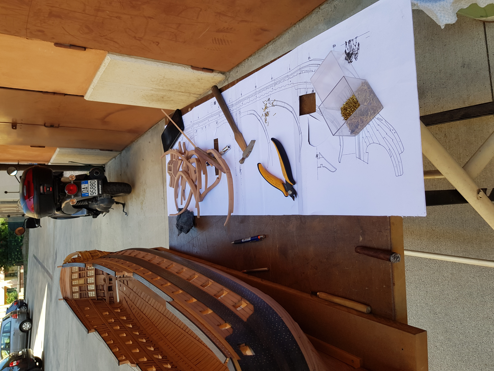
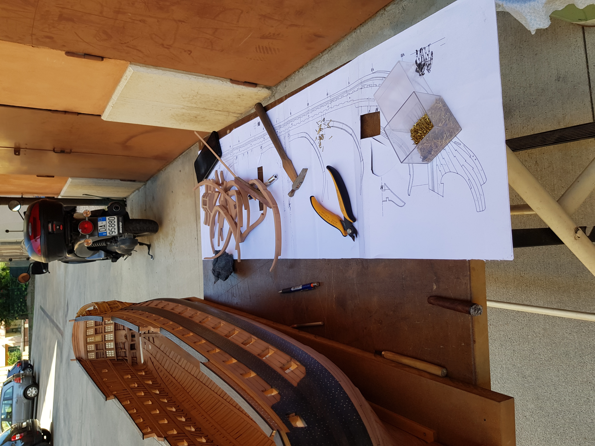
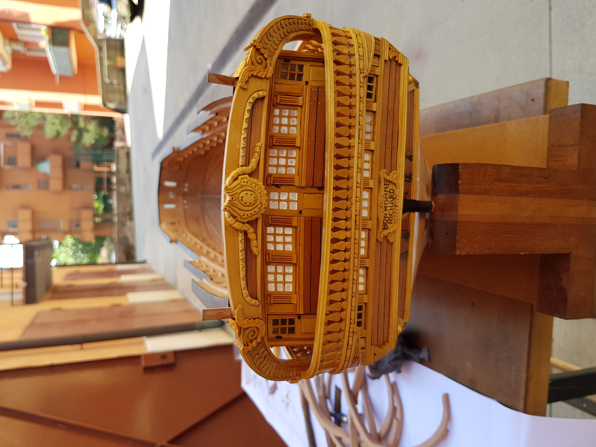
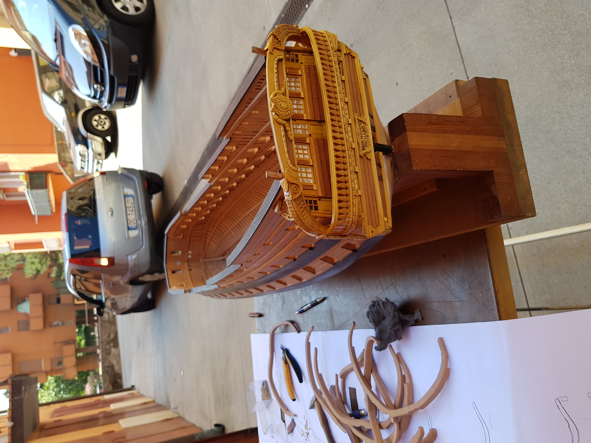
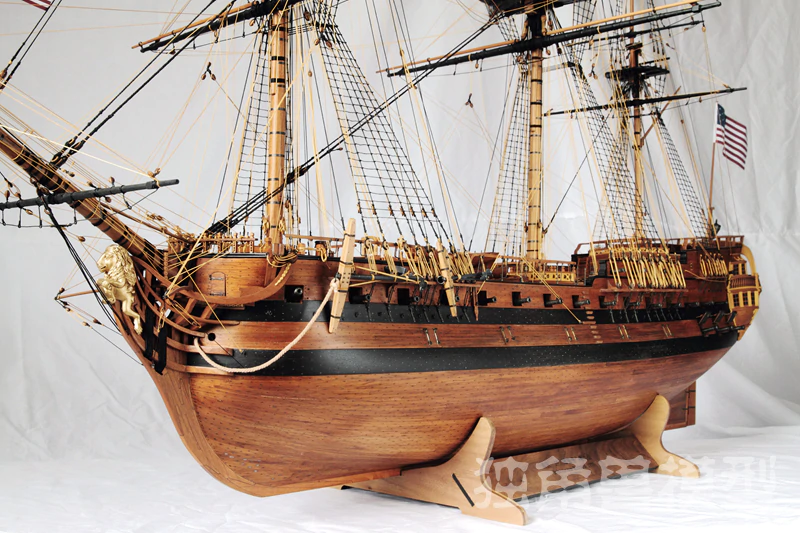
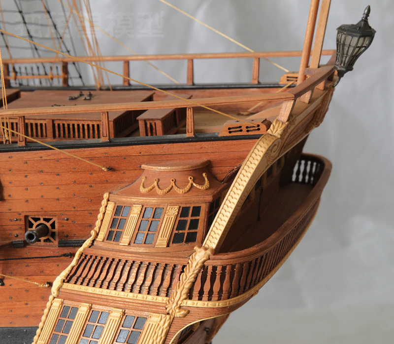
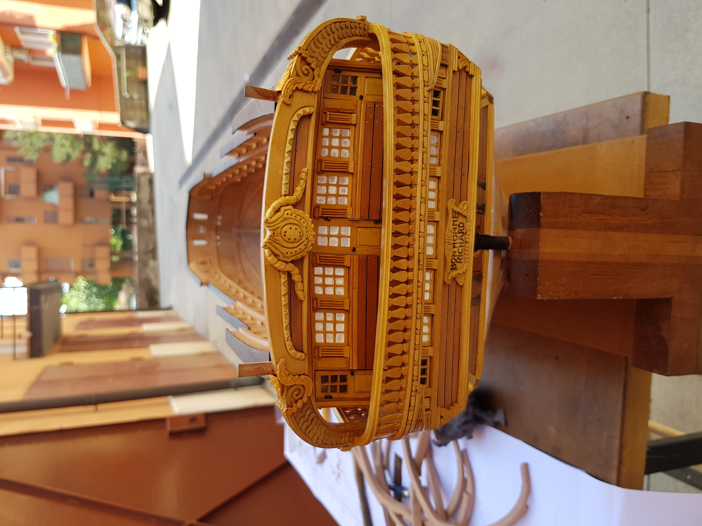
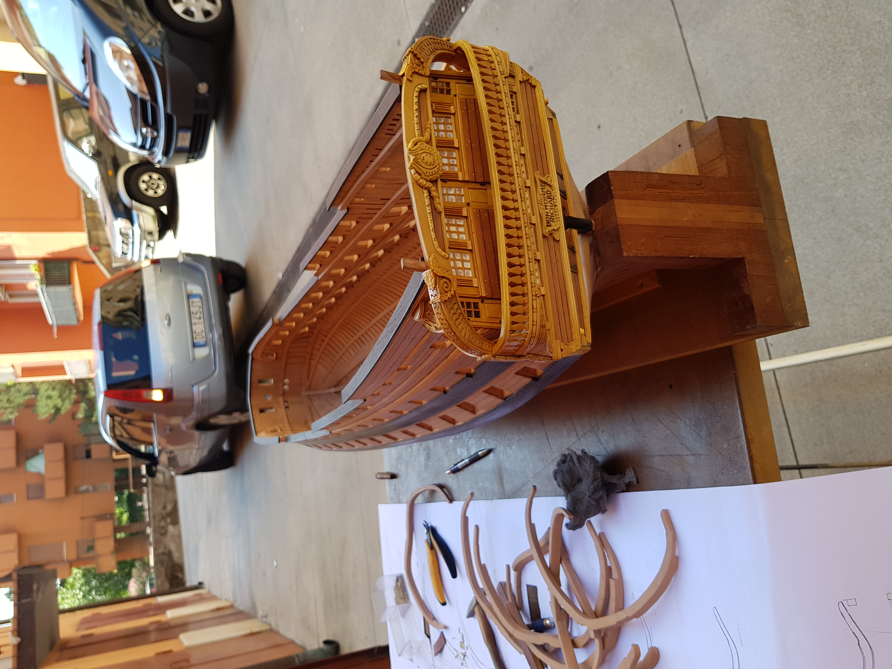
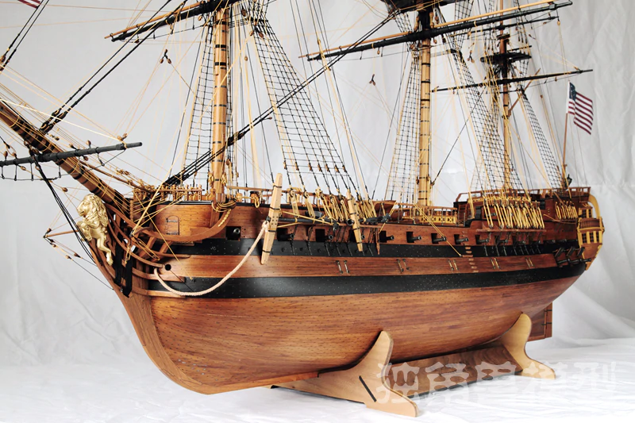
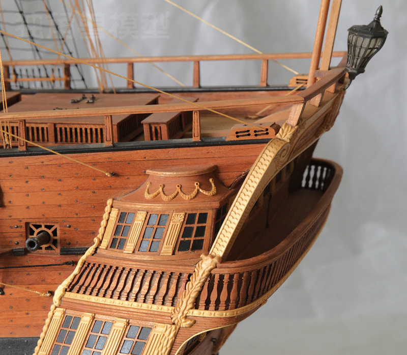

一眨眼三个月过去才又把这东西给拉出来，其间种种非这个地方所该涉及之事略过不提。
Verona家对面有个大叔，大爷。。大哥。。。 不知道多大。自从2000年初搬到那边后经常会看到他坐在楼下做一些木活，二十来年了时不时会见到他做一些小器件。 其实是一直没有怎么在意过，他喜欢做这些东西没什么好大惊小怪。
前两天回去，外面回来的时候见到他又在小仓库（停车房）前做东西，以前一直没注意过他做的东西具体都是什么。这次一眼看出是在做一个帆船。 出于好奇就过去搭茬。说来惭愧，从2000那几年搬家到现在前两天是第一次和他说话。
整个船身已经差不多做好，有一句每一句得和他聊起来。
所有材料零件配件木料等等都是他自己准备，唯一买来的只是船的设计图。
做船身已经花费了三年的时间。要是全都做好可能还需要十年。不过快要退休到时候应该会更快。
帆船的名字叫做 Bonhomme Richard.
对我介绍说船的比例是1：42，所以真船应该在45到50米之间。
而且，更厉害的是，所有船里的物件都将和真船一样正常运作。
随便拍了几个照片，发上来留个纪念。希望当他完成的时候能够有机会看到最终成品。肯定会无比壮观。又从网上找了两个照片，可以参照一下困难程度。

 

 







感觉是夸他是个艺人工匠一点不为过，不管他做任何工作。
因为喜欢而做，夸他都没必要了。何必那么拘谨。值得钦佩就是了多说无益。
等等云云
隐字
年月日地